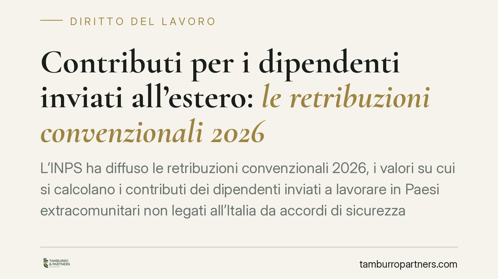

Contributi per i dipendenti inviati all'estero: le retribuzioni convenzionali 2026
L'INPS ha diffuso le retribuzioni convenzionali 2026, i valori su cui si calcolano i contributi dei dipendenti inviati a lavorare in Paesi extracomunitari non legati all'Italia da accordi di sicurezza sociale. Il decreto ministeriale arriva a metà anno: le aziende devono quindi allineare i mesi già versati. Vediamo come funziona il calcolo e come regolarizzare senza sanzioni.

Il quadro di partenza
Quando un'azienda invia un proprio dipendente a lavorare in un Paese extracomunitario con cui l'Italia non ha stipulato una convenzione di sicurezza sociale, i contributi previdenziali non si calcolano sulla retribuzione effettiva, ma su importi forfettari fissati per legge: le cosiddette retribuzioni convenzionali.
La fonte di questo meccanismo è l'art. 1 del D.L. 3 settembre 1987, n. 317 (convertito con modificazioni dalla L. 3 ottobre 1987, n. 398). La norma stabilisce che per i lavoratori italiani operanti in Paesi extra-UE non convenzionati la base imponibile contributiva è determinata annualmente con decreto ministeriale, per fasce di retribuzione e qualifica.
> Nota di verifica interna. I riferimenti al numero di circolare INPS e al numero/data del decreto ministeriale 2026 vanno confermati sui siti ufficiali (INPS e Gazzetta Ufficiale) prima della pubblicazione. In questa versione li indichiamo in forma neutra per non attribuire allo studio citazioni non ancora certe.
Il decreto che fissa i valori è adottato ogni anno dal Ministero del Lavoro e delle Politiche Sociali di concerto con il Ministero dell'Economia e delle Finanze. L'INPS, con apposita circolare, ne recepisce le tabelle e fornisce le istruzioni operative ai datori di lavoro.
Paese convenzionato o non convenzionato: la distinzione che conta
Il meccanismo delle retribuzioni convenzionali riguarda solo i Paesi extra-UE con cui l'Italia non ha accordi di sicurezza sociale.
- Nei Paesi UE e in quelli convenzionati (ad esempio USA, Canada, alcuni Stati sudamericani e del Mediterraneo) valgono i regolamenti europei o gli accordi bilaterali, che disciplinano in modo autonomo l'obbligo contributivo.
- Nei Paesi non convenzionati (privi di accordo) si applica la disciplina interna: contribuzione obbligatoria in Italia, calcolata sulle retribuzioni convenzionali.
Individuare correttamente la categoria del Paese di destinazione è il primo passo: un errore di inquadramento si traduce in versamenti sbagliati per l'intera durata della trasferta.
Perché un decreto a metà anno crea un problema di tempistica
Il decreto che fissa i valori 2026 entra in vigore quando l'anno è già avviato. Nei mesi precedenti le aziende hanno continuato a versare i contributi, ma lo hanno fatto su importi provvisori: in assenza delle tabelle definitive, hanno utilizzato i valori dell'anno precedente o le prime indicazioni disponibili.
Una volta pubblicate le tabelle definitive, i mesi già versati vanno riallineati. Se la retribuzione convenzionale 2026 è più alta di quella applicata in via provvisoria, emerge un debito contributivo da sanare; se è più bassa, può emergere un credito.
Per evitare che questo disallineamento — fisiologico e non imputabile a negligenza del datore — generi sanzioni, l'INPS concede di norma una finestra di regolarizzazione agevolata. La data esatta di scadenza va letta nella circolare ufficiale e inserita in questo testo solo dopo verifica: in genere l'Istituto fissa il termine entro un numero determinato di mesi dalla pubblicazione delle istruzioni.
Perché interessa anche al lavoratore
La fascia convenzionale applicata non è un dettaglio tecnico per soli uffici paghe. Determina il montante contributivo accreditato al lavoratore, cioè la somma dei contributi che concorrerà al calcolo della futura pensione. Una base imponibile sottostimata per mesi incide sulla posizione previdenziale individuale. Allineare correttamente i versamenti tutela quindi anche l'interesse del dipendente distaccato.
Cosa fare in concreto
- Verificate l'inquadramento del Paese di destinazione: controllate se è UE, convenzionato o non convenzionato, perché cambia radicalmente la disciplina applicabile.
- Individuate la fascia e la qualifica corretta nelle tabelle delle retribuzioni convenzionali 2026, per ciascun lavoratore all'estero.
- Confrontate gli importi versati nei primi mesi con i valori definitivi e quantificate l'eventuale conguaglio a debito o a credito.
- Regolarizzate entro il termine indicato dalla circolare INPS, verificando la scadenza ufficiale per beneficiare dell'esclusione delle sanzioni.
- Coinvolgete tempestivamente il consulente del lavoro e, nei casi di distacchi complessi o di pluralità di sedi estere, effettuate una valutazione preliminare per impostare correttamente gli adempimenti.
---
Contributo informativo a cura di Tamburro & Partners – Avv. Giuseppe Tamburro. Non costituisce parere legale.
Ogni storia di lavoro ha i suoi tempi.
Se gestisci HR e vuoi un confronto su contenzioso, ispezioni o licenziamenti, scrivi allo studio. Ti rispondiamo entro un giorno lavorativo.